My Role
What I worked on
Design and prototyping were my main focus on this project. I led the Figma prototype and the interaction/visual design decisions, building on top of our shared research, while my partner focused on the written research documentation and reporting.
- Figma Prototyping — Built and owned the interactive prototype from start to finish, covering both the elderly-user and trusted-relative account flows.
- Interaction & Visual Design — Led the design decisions behind the account structure, information architecture, and individual screen layouts.
- Ideation & Storyboarding — Sketched the raw concept notes and all three user-scenario storyboards we used to test whether the interaction model actually held up.
- Usability Testing — Facilitated both rounds of moderated testing and turned round-one feedback directly into round-two design changes.
Research & Discovery
Starting from evidence, not assumptions
SafeSmart protects elderly people from financial scams without expecting them to learn any new technology. Before we did any interface design, we surveyed 61 friends and family members about their elderly relatives — not elderly people directly, since we were worried that would either skew the responses or come across as discouraging.
- 77.1% of respondents are worried their elderly relatives could be victims of a scam, but only 19.7% are confident in their elderly relatives' ability to safely navigate the internet.
- 63.9% directly know somebody who has been scammed — the most common scams reported back were fake banking emails and scammers pretending to be family members in need of money.
- 88.5% of respondents said they would be interested in an app/program to help manage internet safety for their elderly relatives.
- 78.7% of respondents selected "a system to alert trusted contacts when suspicious activity is flagged" as the feature that would best help their elderly relatives — the highest-rated option, and the core of our product.
"They were asked to send money and the scammer emptied their bank account."
Survey respondent, describing a scam a relative experienced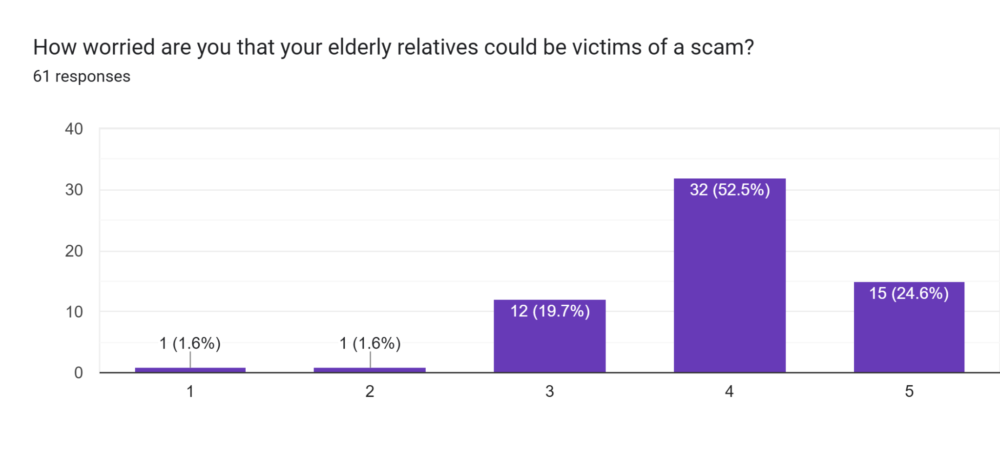
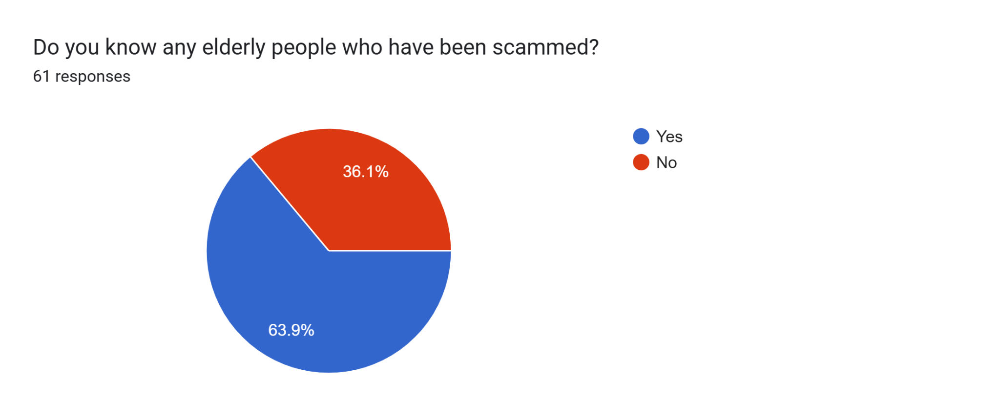
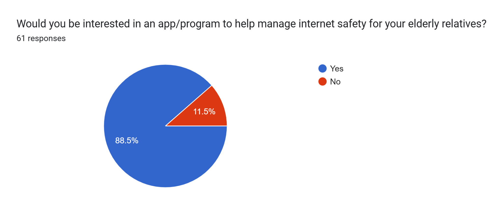
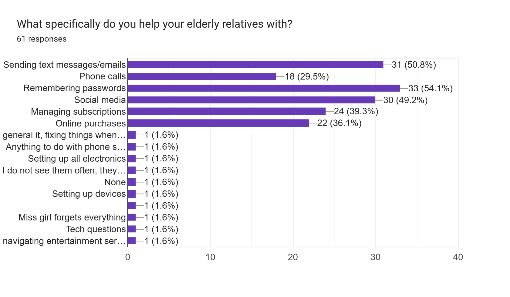
Ideation
From insight to concept
Early brainstorming weighed a soft warning pop-up against one that fully blocks the action, along with a trusted-contact view with adjustable privacy. The elderly account stays minimal on purpose, while the trusted-contact account carries most of the interface. The survey backed up that instinct — most people don't think their relatives can, or want to, learn new tech, so the product leans on monitoring instead of teaching.
To pressure-test the concept against real situations, we storyboarded three scenarios for our final design summary — one per core use case.
Scenario 1
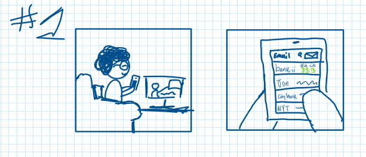
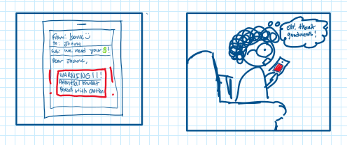
Joane gets an urgent email asking for money from "bank :)" — not her actual bank, "city bank." SafeSmart catches it as a likely scam and warns her before she gets the chance to respond.
Scenario 2
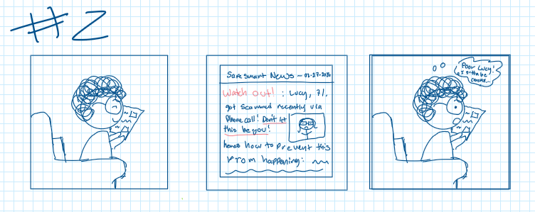
Joane reads SafeSmart's digital newspaper, which covers recent scams and how to avoid them. A story about Lucy, scammed over the phone, unsettles her — but reinforces why she should stay cautious.
"There is no ability or intent to learn anymore."
Survey respondent, in reference to elderly peopleScenario 3
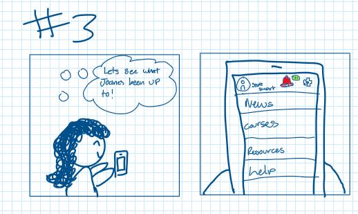
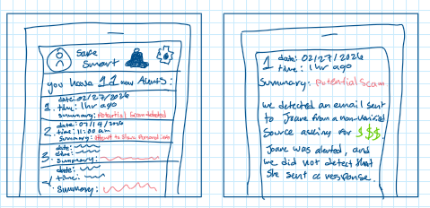
Lisa, Joane's daughter, keeps an eye on flagged activity on her mother's account. She checks the latest alert — a fake bank email asking for money — and confirms Joane never responded, thanks to SafeSmart's warning.
Prototyping & Usability Testing
Validating the flow
For round two, we tested three college-aged participants — classmates we recruited out of convenience, not SafeSmart's actual target demographic, but still useful for surfacing real problems. Each one completed five tasks in the Figma prototype, playing both the elderly user and the trusted relative, while we tracked task success and timing.
- Dual Account Model — Elder123 gets a minimal, notification-driven experience; Relative123 gets the monitoring and alert-review tools.
- Familiar Information Architecture — Mail, News, Prevention History, Resources, Help — mirrors apps users already know.
- Scripted Task Scenarios — Numbered, click-by-click instructions per test, so we measured real task completion, not opinions.
- Two Testing Rounds — Round one validated the core flows; round two tested two features added in response to that feedback.
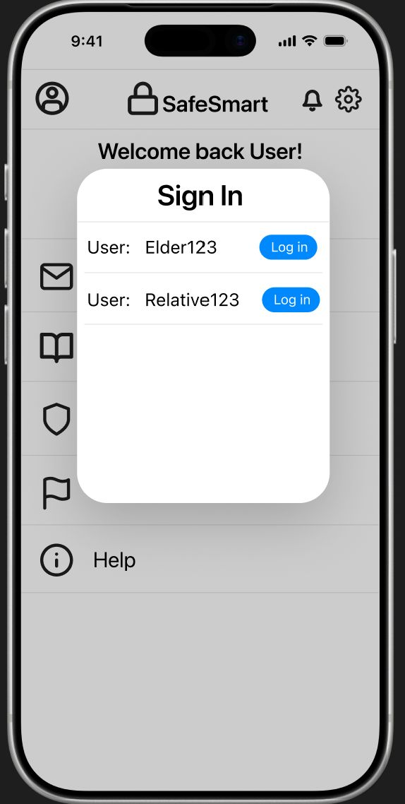
Sign In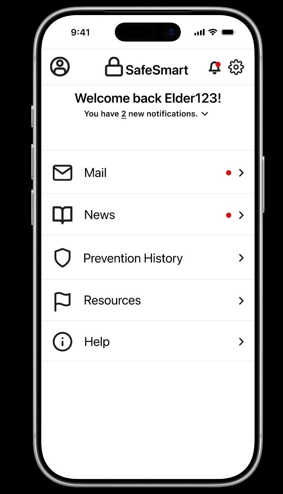
Elder Dashboard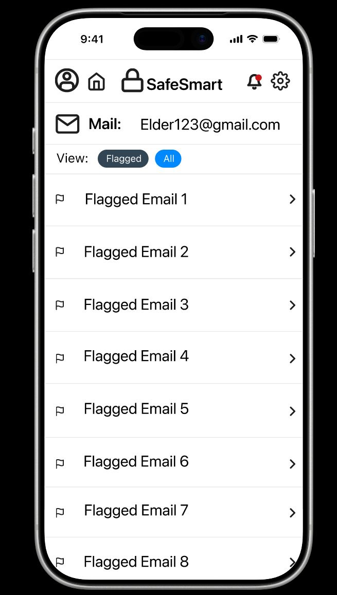
Flagged Mail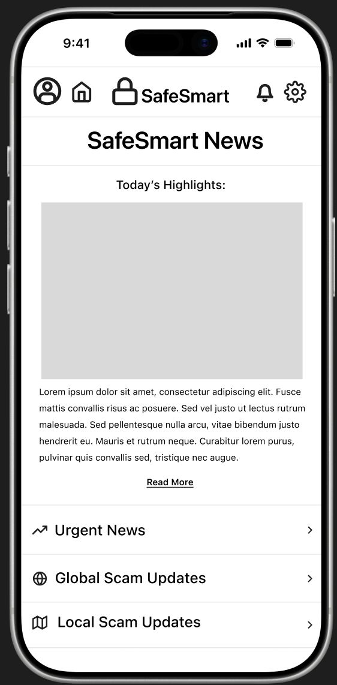
SafeSmart News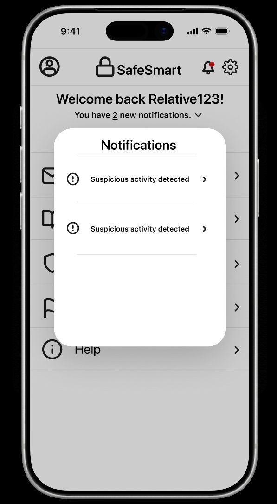
Relative AlertsIterating on Feedback
What round one changed
Feedback from round one drove two additions: a sign-out flow we hadn't originally planned on, and a simulated lock-screen notification, after a participant asked how SafeSmart would actually alert someone who wasn't in the app at the time.
- Core Tasks Unchanged — The first three tests landed the same as round one; those flows weren't touched.
- Notification Task Passed — All three completed it smoothly, though one expected to land directly on the alert instead of the login screen.
- Sign-Out Took Longer — Still completed, but testers often clicked the wrong icon first — more an unfamiliar-icon issue than a real task failure.
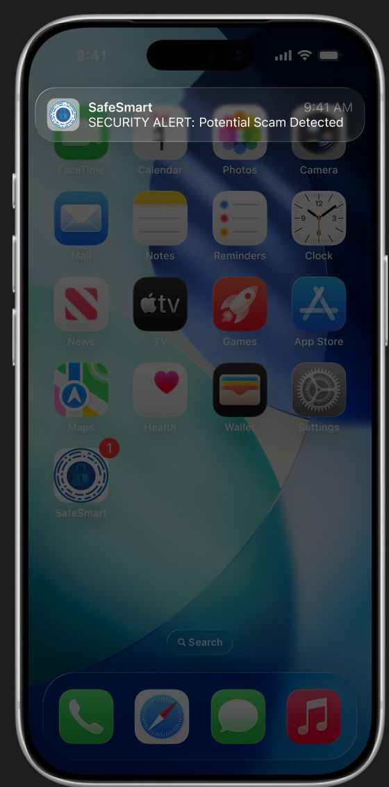
New — Lock-Screen Alert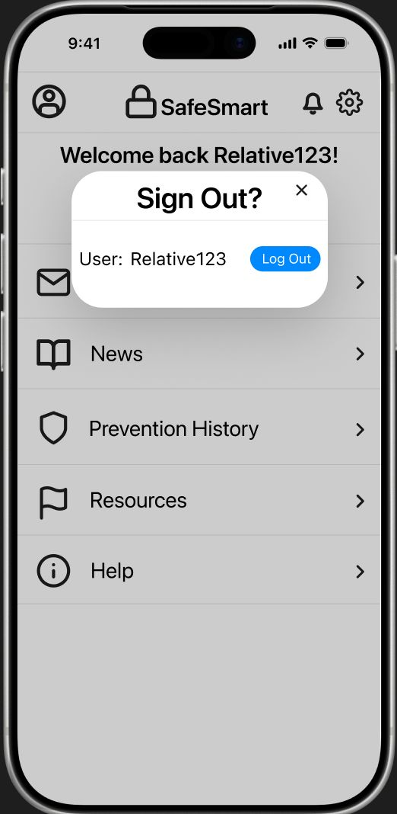
New — Sign-Out ConfirmationReflection
Strengths, challenges & what's next
Overall, we're proud of what we got built in the time we had. Here's what stood out once we stepped back and looked at it as a whole:
Strengths
- User-Centered Design — Every feature we built traces back to actual survey data, not just a guess.
- Simple, Accessible UI — Clear and readable for elderly users and relatives alike.
- Relevant Core Idea — A real alert system that protects without sacrificing independence.
- Familiar Features — A newspaper-style news feed, built on communication elderly users already trust.
Challenges
- Audience Mismatch — We tested with college students, not our actual elderly/relative users.
- Roles Too Similar — The elder and relative accounts don't differ enough yet.
- Feature Confusion — A few testers weren't sure why certain features (like News) existed.
- Prototype Limitations — Figma couldn't simulate real app behavior, so some of the flows stayed a little rough.
Future Work
- Figure out how SafeSmart alerts someone who isn't in the app.
- Differentiate the elderly and relative accounts further.
- Keep refining the visual design.